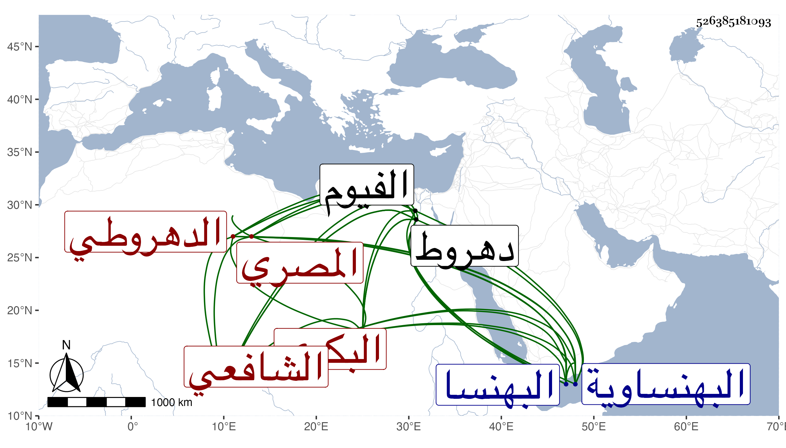

0902Sakhawi.DawLamic.ITO20230111-ara1.EIS1600.526385181093
Biography ID: 526385181093
178
عبد الرحمن بن أحمد بن محمد بن أحمد بن محمد بن أحمد بن محمد بن عوض ابن عبد الخالق الزين أو العز بن الزين بن ناصر الدين البكري الدهروطي ثم المصري الشافعي عم الجلال محمد بن عبد الرحمن بن أحمد الآتي والماضي أبوه . ولد في ليلة الاثنين سابع عشري شعبان سنة تسع وثمانمائة بدهروط من البهنساوية وقرأ بها القرآن وكان جد أبيه أحمد وأبوه محمد مالكيين وأماجده وأبوه فشافعيان كبيران فنشأ على مذهبهما ، وحفظ في الفقه التحرير للجمال البزري الواسطي وهو على نمط الحاوي ثم المنهاجين الفرعي والأصلي مع زوائده للأسنائي وألفية ابن مالك ، واشتغل يسيرا على أبيه وغيره بل بحث في الفقه على الشمس البرماوي ولازمه والزين القمني والقاياتي وعنه أخذ الأصول وفي الفرائض على ابن المجدي وفي العربية عن الشموس القاياتي والونائي وابن عمار وسمع على شيخنا وناب عنه وعن غيره في القضاء ودرس بالتقوية والحسامية من الفيوم ، وحج في سنة ثمان وأربعين وتعاني النظم فأكثر وامتدح شيخنا وغيره ومما كتبته عنه في شيخنا حين عوده للقضاء قصيدة سقتها في الجواهر أولها :
| رباني حب زينب وللرباب | لتركهما جوابي والجوى بي |
وقوله مما أوردته في معجمي حين عزل السفطي عن القضاء :
| توالت خطوب الدهر قسرا على الورى | وناهيك خطب الدهر يعقبه القسر |
وكان فاضلا مفيدا فصيحا حسن المذاكرة بالفقه والمحاضرة محبا في الفضلاء متوددا اليهم مكرما لوافدهم . مات في شوال سنة ثلاث وثمانين بطنبذي المجاورة لدهروط بالقرب من البهنسا وكان قاضيها رحمه الله وعفا عنه .
